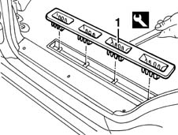

7040L14 panel brackets (1) covering seat attachments to passenger compartment floor - r r
- Path
- Procedures > 70 FITTINGS > 7040 BODYSHELL INTERIOR TRIMS AND FITTINGS > 7040L CABIN FLOOR COVERING > 7040L14 panel brackets (1) covering seat attachments to passenger compartment floor - r r
- Kind
- repair procedure (removal / refitting; the operation number is the code)
- Applies to
- all engines; all production periods
- Interactive page
- https://sloeber94.github.io/elrnDB-fMltpl/en/#/2892208
Applies to: all engines; all production periods
 Removing
Removing
 Refitting
Refitting7050A90 rear seat (one) - r re - repair with seat removed
1. Remove the embellishment using the approriate tool.
 | Name | Country |
|---|---|---|
1 | Scraper blade | 1.878.077.000 |

Applies to: all engines; all production periods
Refitting
RemovingCheck that the embellishment is undamaged.
Fit the embellishment.
Topics linked from this page (1)
Topics that link to this page (9)
- 1040A10 fuel tank - r + r and decant fuel
- 1040A14 fuel tank - r + r for replacement
- 1040A20 FUEL TANK - R + R AND DECANT FUEL FOR VERSIONS WITH EVAPORATION CONTROL SYSTEM
- 1040A22 fuel tank - r + r for versions with evaporation control system for replacement
- 1040A70 submerged pump assembly complete with level guage control - r + r
- 5505C41 cabin wiring - r r
- 7040L13 passenger compartment floor soundproofing - r r
- 7040L18 passenger compartment floor rear carpet - r r
- 7050A95 mount (one) fitting rear seat to floor - r r